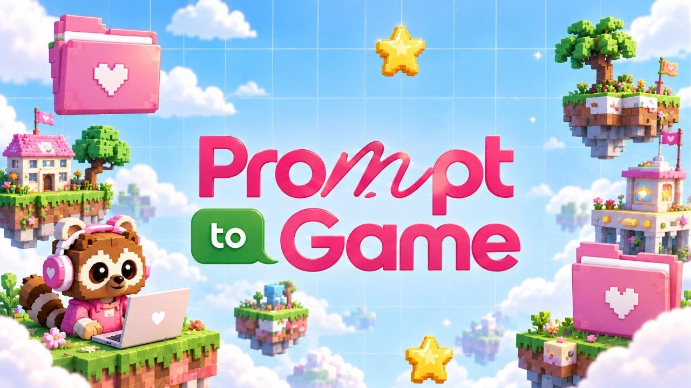
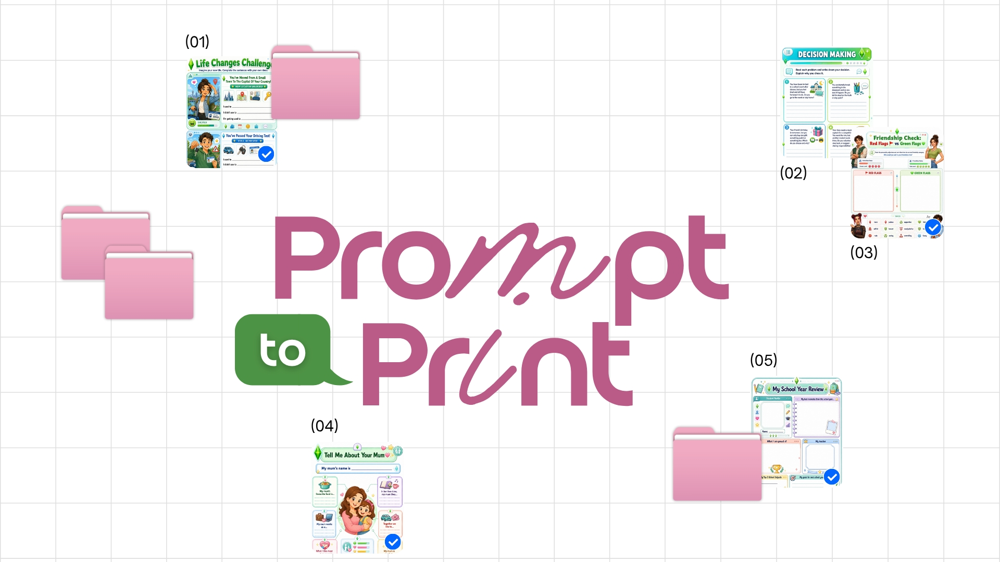

ИГРАТЬ И УЧИТЬСЯ
Prompt to Game
Создавайте интерактивные игры: от морского боя до аркады со своим персонажем. Без предварительных знаний программирования.
Открыть Prompt to Gameот 990 ₽
Научитесь превращать идеи в интерактивные игры и учебные материалы с помощью нейросетей. Выберите, что хотите создать.
От первого запроса до готового результата
Создавайте интерактивные игры: от морского боя до аркады со своим персонажем. Без предварительных знаний программирования.

Создавайте рабочие листы, карточки и задания под конкретный урок. Для печати, работы на экране и отправки ученикам.
В основе обоих курсов — понимание процесса. Готовые промпты и инструменты помогают, а решения остаются за вами.
Определите, что ученику нужно потренировать. Выберите формат под его возраст, уровень и интересы.
Задайте содержание, структуру и визуальный стиль. Научитесь составлять понятные запросы самостоятельно.
Проверьте задания, исправьте неточности и адаптируйте материал для своих занятий.
Игровые действия и движение — Game.
Рабочие листы, карточки и визуальные задания — Print.